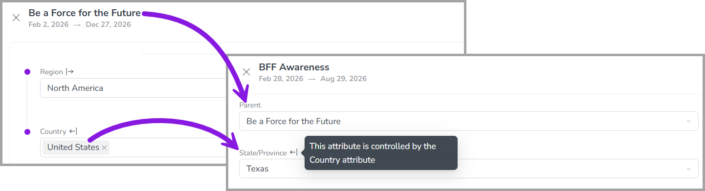
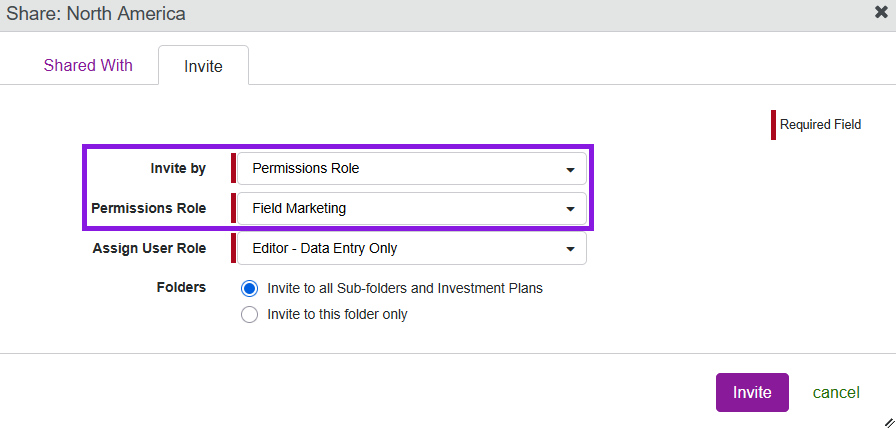
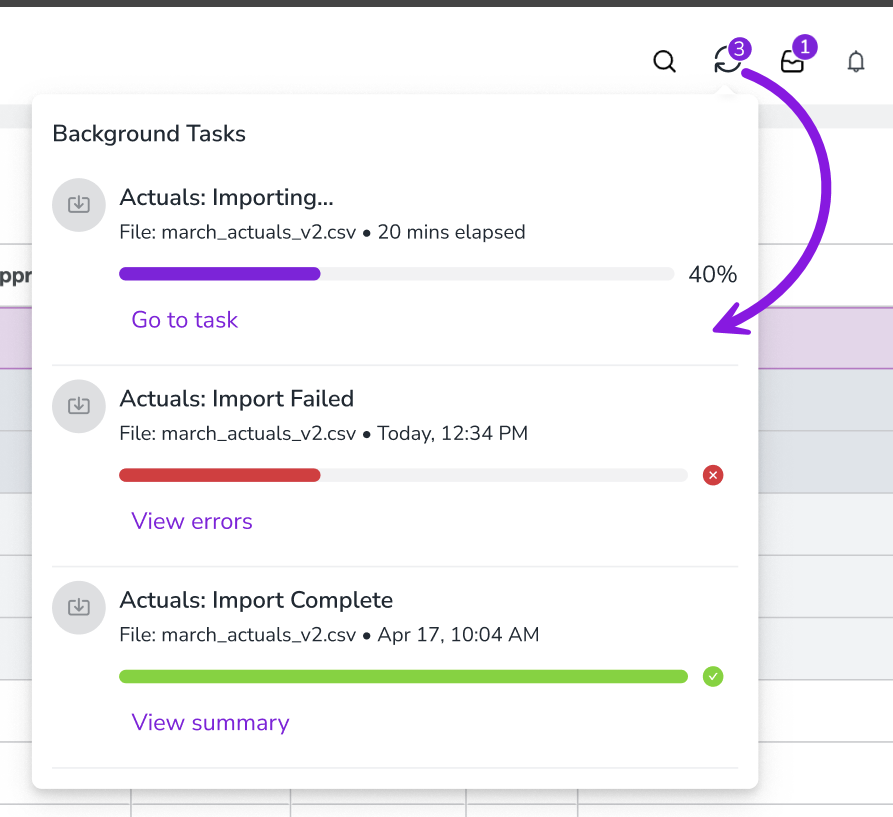
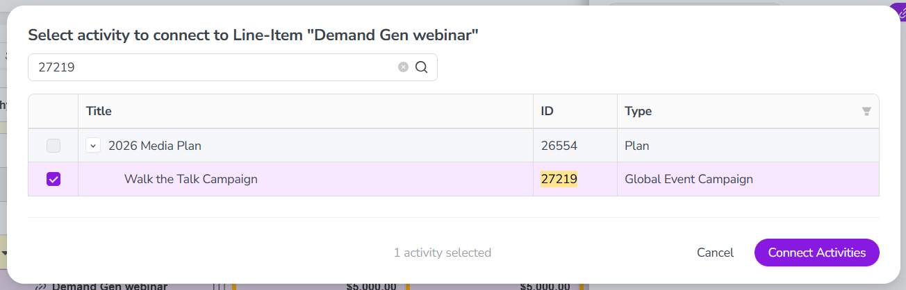

What's new: 2026.5
Discover all the new Uptempo features introduced with the 2026.5 release, available from May 27, 2026.
Campaign Management: Activity Configuration
Create attribute dependencies across activity hierarchy levels
You can now set up attribute dependencies that span multiple levels of the activity hierarchy, where one attribute controls another attribute on a different, lower-level activity.
Streamline data entry across levels: You no longer need to force high-level attributes down to lower levels of the hierarchy to use attribute dependencies. For example, you can now configure a dependency where users set the Country attribute on a parent activity, and the State attribute on all child activities is automatically filtered to the relevant options.
Reduce manual effort and input errors: Users now only need to set a controlling attribute once on the parent activity, instead of on every child activity. Eliminating these repeated selections lowers user workload, and reduces the risk of input errors.
Prevent accidental data loss: If a user attempts to change the value of the controlling attribute in a multi-level dependency, the system now displays a warning that the change may remove existing data in any dependent attributes.
{kind=link}

Campaign Management: Activities
Track activity funding by period
You can now view activity funding breakdowns by quarter or fiscal year at every level of your activity hierarchy to get more visibility into when money is being spent.
View connected investments by quarter or fiscal year: On any activity, you can now view quarterly and annual breakdowns of connected investments to get a more granular view of spend timing. For investments that span multiple years, you can also see separate breakdowns for each fiscal year.
Prevent budget overages: At the tactical level, you can now see exactly when spend hits the ledger, making it easy to catch overspending in a quarter before it impacts your annual budget health.
Get big-picture oversight: You can view activity funding breakdowns at any level of the activity hierarchy, eliminating the need to drill into individual tactic-level activities or export data for manual reconciliation.

Financial Management: Budgets
Invite users to budgets by their permissions role
In Uptempo 1.0 instances, administrators can now invite users to the financial hierarchy using permissions roles, making it easier to manage access to Uptempo Financial Management at scale directly from your existing user management system.
Grant access by role: Instead of inviting individual users to the budget hierarchy, you can now invite any permissions role in the Budget module (under Administration > Permissions > Budget) to easily grant access to all users assigned to that role.
Automate access via SSO: To simplify large-scale user management, you can link your SSO groups directly to specific Budget module roles. This allows you to manage access to Uptempo Financial Management centrally through your organization's user management system.
Configure role mappings: When you invite a permissions role to a budget, you can conveniently grant the appropriate access level to Financial Management by assigning a corresponding user role, such as Editor or Viewer.
{kind=link}

→ Learn more about inviting users to Uptempo Financial Management budgets
Monitor the progress of data imports from any page
You can now monitor the real-time progress of your POs and actuals imports from anywhere in Uptempo, allowing you to continue with other tasks without losing visibility into the import status.
Multitask during large imports: For large datasets that take several minutes to process, you no longer need to wait on the Import page. You can now safely navigate away to focus on other tasks while the import is processed in the background.
Real-time status updates: A new UI progress indicator displays real-time percentage updates and the exact state of your import (Processing, Completed, or Failed), and is accessible from any page.
Instant notifications and quick access: Receive immediate success or error notifications as soon as your import finishes. You can also click the progress indicator at any time to view specific details or return directly to the full Import page.
{kind=link}

→ Learn more about importing data into Uptempo Financial Management
Expanded support for Persistent IDs
Uptempo now supports Persistent IDs for budgets, columns, and column choices, enabling seamless year-over-year reporting even when your budget structures evolve.
Permanent identifiers for higher-level budget structures: In addition to investment line items, Uptempo now also assigns a Persistent ID to all budgets, columns, and column choices (predefined list option) created as copies of existing entities, such as during a rollover. In each case, the copied entity automatically inherits the Persistent ID of its source entity, ensuring data continuity across rollovers.
Eliminate manual reconciliation: If the name of a budget, column, or column choice is changed during an annual rollover, your data mappings will no longer break. The Persistent ID provides a consistent identifier for an entity across name changes, eliminating the need to manually rebuild data maps in BI tools and reconcile spending.
More reliable API integrations: Persistent IDs provide a permanent, immutable key for your data pipelines, ensuring that your connections to external systems remain stable and uninterrupted.
→ Learn more about Persistent IDs in Uptempo Financial Management
Financial Management: Investments
Search for activities to connect to investments by Activity ID
When you connect activities to an investment, the search function in the Select activity to connect to... dialog now supports searching by Activity ID. This makes it easier to find a specific activity to connect, especially if a lot of your activities have similar names.
{kind=link}
